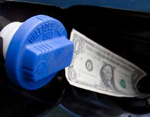

How To Calculate Gas Mileage
If you want to increase your vehicle's mpg and save money, the first step is calculating mpg. Don't worry, the math is easier than you think.
By John Rockhold
August/September 2007
Even if you hate math, you can easily calculate your car or truck’s gas mileage. If you haven't done it for fear of complex equations and mindbending math, fear not - anyone can do this. Odds are you'll find calculating gas mileage to be easier and less of a hassle than you expected.
Plus, this is the first step toward improving the gas mileage of your vehicle: Seeing how the numbers change over time will give you a better understanding of the positive and negative influences on mpg, which makes it easier to change your driving habits and thus save money on gas.
Also, by keeping tabs on your vehicle's mpg you may see signals of potential maintenance needs before they become bigger and more expensive problems.
Here are the steps for mpg math, plus a few tips to get more gas for your money.
- Fill up your tank. But don’t top off your tank after the gas pump automatically shuts off. Depending on the specific setup at the gas station, some or all of that "extra" gas may get sucked back into the station’s tanks - but you still pay for it. Either way, the backfire vapors from topping off contribute to air pollution.
- Reset your trip meter to zero. Now you’re on the gas mileage clock.
- Fill your tank when the time comes. In warmer months, you’ll get more gas for your money if you fill up in the early morning or late evening, when temperatures are cooler and gas is densest. Cooler conditions also mean less evaporative emissions from pumping gas - smog forms more easily when it’s hottest outside. In winter months, it’s a good idea to keep your tank at least half full for safety reasons.
- Write down the number of gallons it took to fill your tank and the number of miles on your trip meter. A receipt is an easy place to write these down; most already include the number of gallons you bought. Reset the trip meter to zero (so you can calculate the mpg of the next tank).
- Divide the trip miles by the gallons of gas. Bingo, that’s your gas mileage. For example: 293.1 miles ÷ 8.374 gallons = 35 mpg.
- Be sure your trip meter is back to zero. Start your gar and you're back on the gas mileage clock.
- Keep a small notebook in your car or make a simple spreadsheet on your computer to track the numbers over time. There you could also record basic notes on mpg influences such as speed, tire pressure, driving conditions and use of air conditioning. If you see a dramatic drop from one tank to the next and don’t have an obvious explanation, your vehicle might need maintenance.

ISTOCKPHOTO
Get to know your car's mpg and you'll find it much easier to save money on gas.
|
|
|